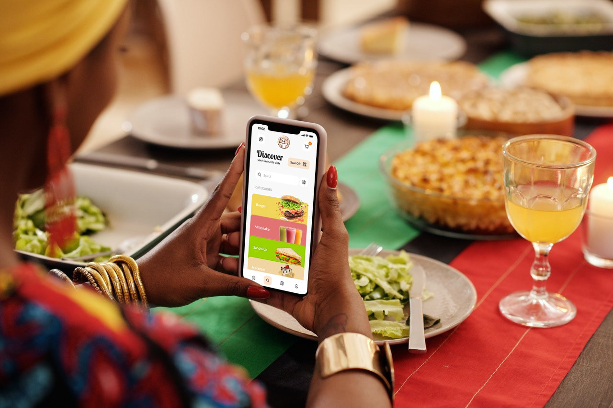
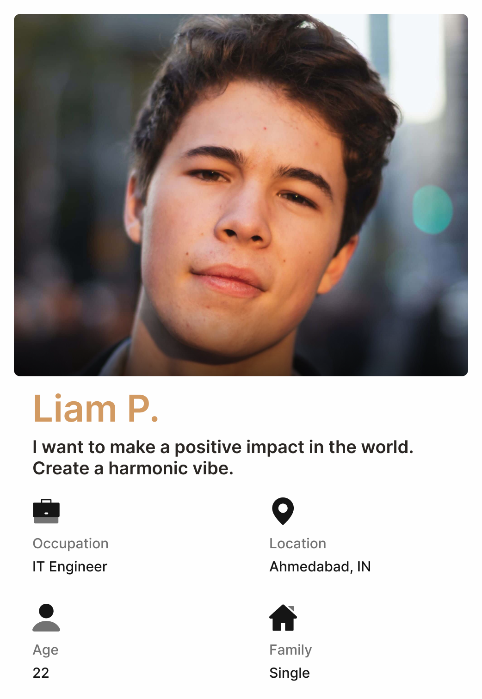
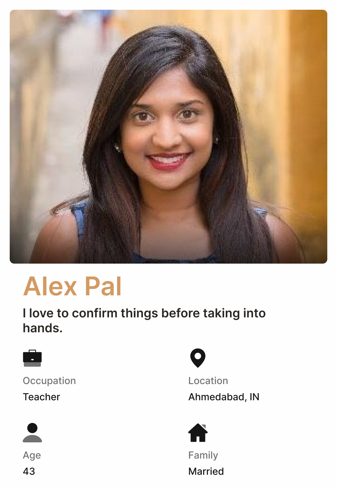
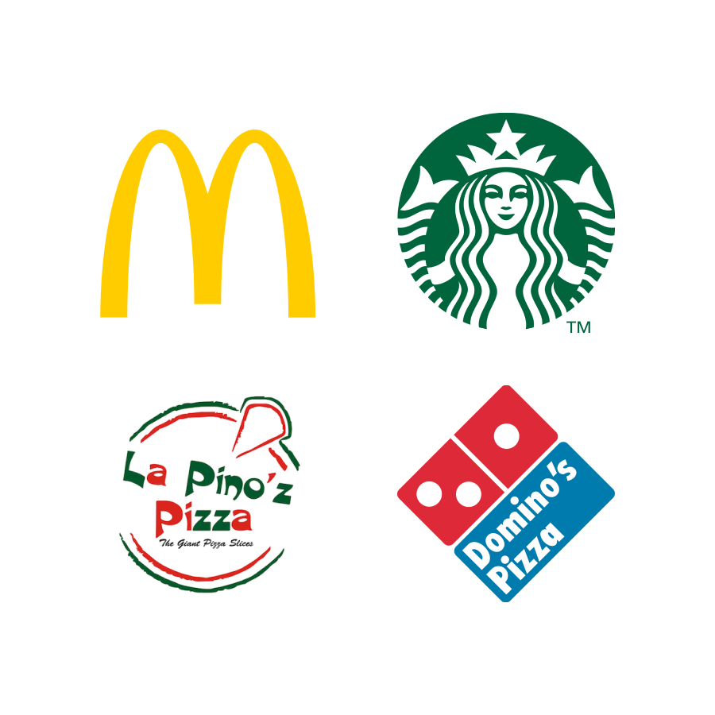
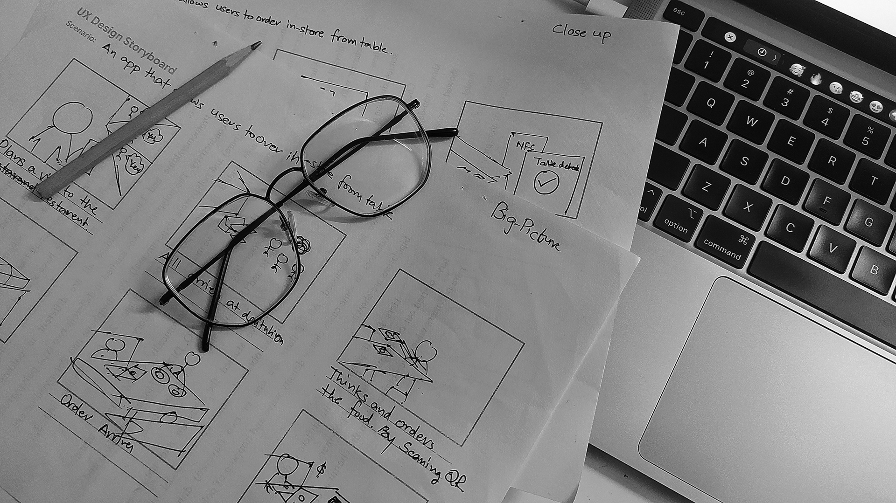
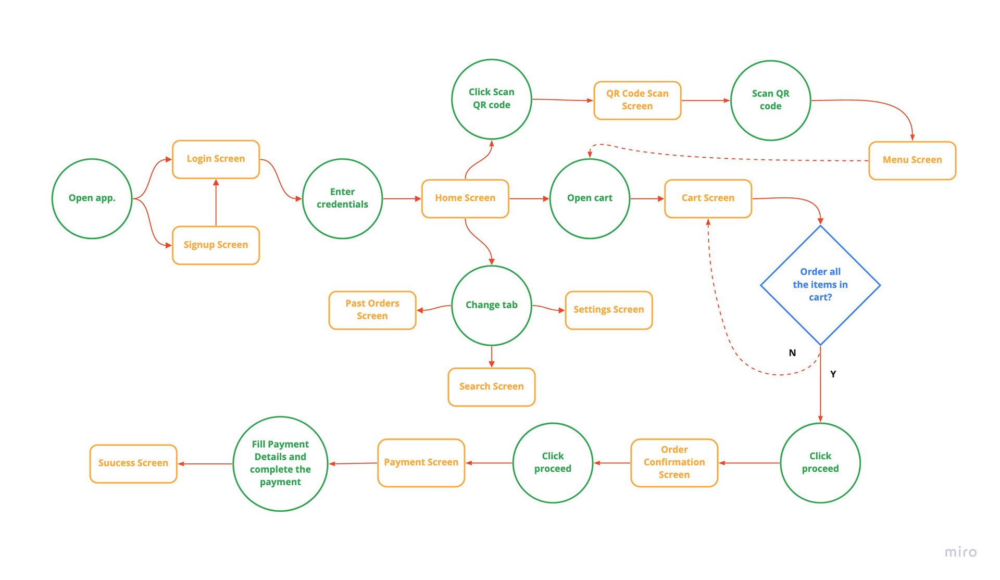
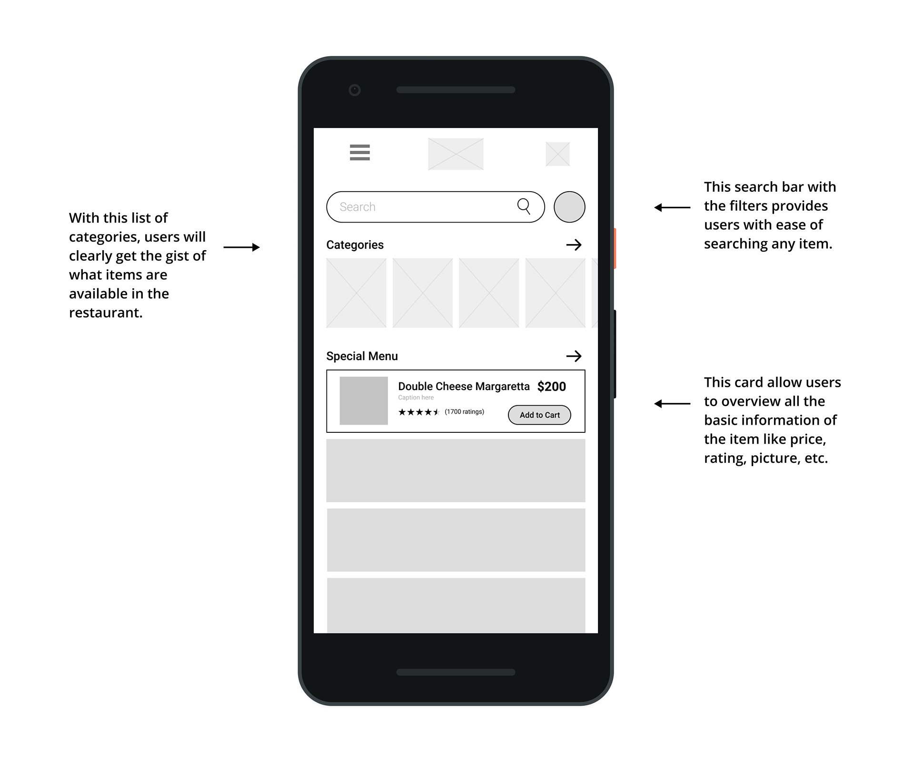
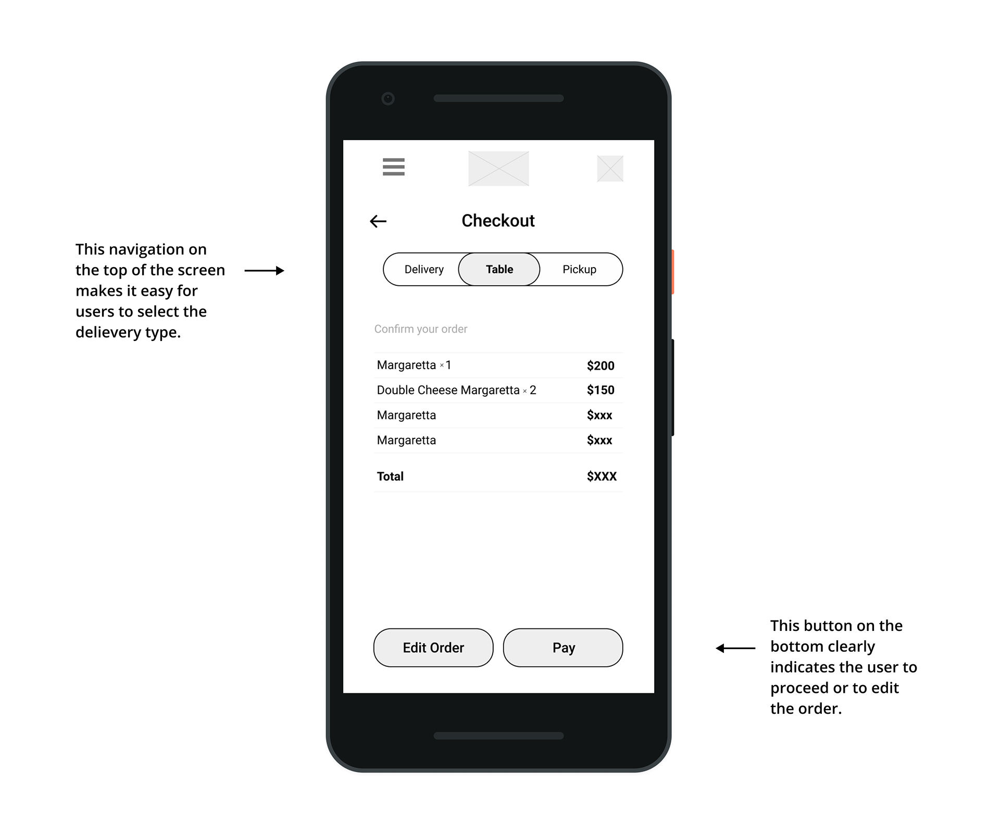

"A brand for a company is like a reputation for a person. You earn reputation by trying to do hard things well."
- Jeff Bezos, Amazon
Understanding the User
Kickoff Study
I conducted interviews and created empathy maps to understand the users I’m designing for and their needs. A primary user group identified through research was working adults who don’t have time to cook meals. This user group confirmed initial assumptions about Petpuja's customers for example students from the nearby college, but research also revealed that time was not the only factor limiting users from cooking at home. The key differentiator of this user group is they prefer to order from the application even if order from the table. So they would like to have such applications that can make a delivery order or a pickup order, or in-store order.
Users & Audience
The dominant target users of the e-commerce app are blind people, I'm designing it to keep them front and center. But. with them all the other group of peoples will get benefit and might use these accessibility features more. I took 2 different personas and assumed their core needs and frustrations according to the opinions of some interviewed users.
Meet the Users


Users Pain points
From the early research study, I came to know some of the pain points, which I considered before starting the design activity.
Streamlined payment process
Past order history
Proper reward system
In store order from table
Competitive Analysis
We looked at several potential competing companies, and although none compete directly with Mechmarket, they can still infringe on the business's revenue and popularity. Petpuja has the opportunity to capitalize on this by bringing products from each company to create a one-stop shop without oversaturating the user's selection.
The majority of the features between competitors were very similar, however the main differences that we noticed were:
- Easily Accessible vs Hardly Accessible
- Too Many Screens vs Simplified Interaction
- Bright / Distracting Interface vs Minimalistic Interface
- Specialization of Products

Starting the deisgn
Storyboarding
After collecting the analysis data from the initial study, creating the problem statement, and finalizing the pain points of the users in the prior steps, I moved to the ideation phase where I user the infamous Crazy 8's ideation techniques. I created 3 to 4 crazy 8's user flow and out of them I selected one. Then I created a user journey map of what a basic start to finish journey looks like while ordering an item. It helps in understanding ways users can interact with the product, as well as allowing us to see navigation through user goals. Then wireframed each screen on paper. Followed by a digital wireframe I joined the basic screens to make a meaningful flow of the user path.

Userflow
It is very important to have a clear workflow for users. This user journey diagram will make the picture of the application screens and workflow more clear.

Paper Wireframe
Taking the time to draft iterations of each screen of the app on paper ensured that the elements that made it to digital wireframes would be well-suited to address user pain points. For the home screen, I prioritized a quick and easy ordering process to help users save time.

Digital Wireframes
As the initial design phase continued, I made sure to base screen designs on feedback and findings from the user research.

Easy navigation was a key user need to address in the designs in addition to equipping the app to work with assistive technologies.

The Usability Study Findings
From the usability study conducted in interviews, I came to know some more insights. People from various fields tested the prototype, different perspectives gave rise to some insights.
Complex Designs
Color visibility issues for partially blind
No purchase help assistance
Can't get the discription if completely blind